Alaskan Alpine Club
Posters and calendars
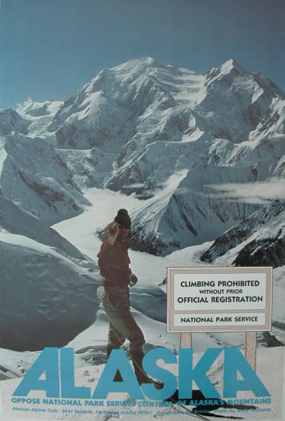
During the public discussion of these matters, the Alaskan Alpine Club, of financially destitute Alaska climbers, scraped together enough money, at great effort, to make a full size, full color, political information poster, as you can see.
The Alaskan Alpine Club poster was the only Alaskan organization poster which illuminated the Alaska position, made during the famous Alaska Lands Act debates. The Sierra Club and other lower 48 environmentalists, awash with government grant money and craving more power, made many posters supporting the Washington DC attack on the rights of Alaskans, not unlike similar majority public support for the Washington DC attack on Iraq, Afghanistan, Somalia, Bosnia, Vietnam and everywhere else those mental midgets believe that the insatiably greedy, Police-State Washington DC thugs make better decisions for other people's resources and rights.
During the effort to make the poster, a Director of the Alaskan Alpine Club personally suggested to Alaska's Governor Jay Hammond that the Sierra Club and its ilk were very effective with their many posters of spectacular Alaska scenery, and lies about how only oil-guzzling Washington DC agencies would protect the wilderness from those damn Alaskans who obviously want to destroy everything. The club Director suggested that the State should make some posters of the same scenery, with Alaskans speaking to the issue of their rights, and of their more knowledgeable concern with the management of their home land, a concept that lower 48 people might recognize.
Jay Hammond, mental midget RepublicratDemocan that he still is, deep in the pocket of the lower 48 environmentalists, responded by nodding to his Sierra Club assistant, Bob Waldrop, who stated: "The State should not attempt to influence people's minds." Waldrop was an activist Sierra Clubber, and fully understood the influence of the Sierra Club's Alaska scenery posters.
Idiot that Jay Hammond obviously was, and still is, if not otherwise dishonest to the core of his soul, he could not understand the laughable contradiction in his words while the State was spending millions of dollars paying high salary political cronies to lobby congressmen, and printing full page newspaper ads (influencing people's minds) during the debate on the Alaska Lands Act, to pander the government's political position, not the concerns of Alaskans, as usual for corrupt governments. Hammond was doing precisely what the Sierra Club orchestrated, by keeping the public discussion focused on the illusionary fight between those nasty developers and the savior environmentalists, which verifiably had no substance on the land, to fool unquestioning fools believing the Sierra Club / government illusions. In contrast, the real issue of the Alaska Lands Act was that of citizen rights versus Washington DC's military-industrial complex trammeling everyone and everything, as usual.
The Alaskan Alpine Club finally cobbled together enough money to pay for the poster printing, and delivery of a few of the posters. When the club got enough money to pay for delivery of another group of posters, the printer, Alpine Graphics of Seattle and Boulder, informed the club that he had thrown away all the rest of the posters, and that he would not reimburse the club for the printing costs. When the club suggested the impropriety of his action, he responded: "You will have to sue me." Curious event.
Not long thereafter, the rumor emerged that certain National Park Service rangers were bragging about the Park Service paying off Alpine Graphics to destroy the posters.
The Sierra Club, American Alpine Club, other environmentalists, Jay Hammond, National Park Service dolts, Washington DC DemocanRepublicrats, their police and ilk of power-damaged minds, are superlative colleagues of each other, much to the inordinate entertainment of honest people. Would you not agree?
The Alaskan Alpine Club's full color 2' x 3' poster is the only Alaskan, Alaska Lands Act poster.
And we had fun with the 18" x 23" posters above and below. The fine print lists and describes some of the idiot mountaineering and recreation regulations written by police-mentality Park Service dolts. The power-damaged minds of government thugs cannot recognize the demarcation between human actions which cause damage, and are thus logical to prohibit with law, and human actions which cause no damage, and are thus not logical for application of laws or police activities. Power is insatiable, and destroys the reasoning ability of the human mind. After written law was invented by thinking people, to limit the power of less-thinking kings who ruled by personal decree, the addicting effects of power within the minds of people wielding written law demanded that laws be written against all human actions so that armed thugs enforcing written laws could personally decree who of their friends, or people who sufficiently flatter the thugs, may be granted exemptions from arrest, as favors or privileges. The power of kings just shifted titles, much to the amusement of people observing power-damaged minds.
But power-damaged minds are highly vulnerable to certain concepts.
The Governor Sheffield poster caused the Alaska State Park Service to rescind a precedent-setting ban on climbing, which the idiot Park thugs publicly stated was written to protect climbers from themselves. The Park Operations Officer, an intellectually absent, previous Army lieutenant who wrote the climbing ban regulation, and expressed contempt for climbers, was soon-after welcomed as a new member of the American Alpine Club, quite appropriately. He told the Alaskan Alpine Club that nothing could stop the adoption of his climbing ban regulation, included in his list of other new Park regulations against the existence of humans in the government's Parks. So we made the Sheffield Legacy poster and distributed it internationally. Then we sent Sheffield a copy, and pictures of where it was posted around the world, and were promptly informed that the Governor personally ordered the deletion of the climbing ban regulation, and almost deleted the Operations Officer.
But there all still many American DemocanRepublicrat fools avidly supporting the use of mindless power above reasoning. Humans remain within the intellectual dark ages. Americans are easily intimidated by their power-craving police, prosecutors and judges wielding fraudulent inferior laws above superior laws. Most Americans are kept ignorant by the government's school teachers and other adults, of how to ask effective questions, the most valuable knowledge any person can learn.
Governor Bill Sheffield and his successor clone Governor Steve Cowper, like all RepublicratDemocans, continued spending tax money to write more laws against humans pursuing harmless activities, and to hire more unquestioning police thugs to trammel the rights of humans, including we climbers. We had fun making a few more posters. Commonly intelligent climbers quickly learn how to successfully ignore climbing regulations, because the Park agencies can only hire verifiably stupid, self-fooled dolts as rangers. Who would accept a job, and a gun, to harass fellow humans harmlessly recreating in areas set aside for recreation, if not the most dullard, gullible sops on the rock? Climbers do not arrest climbers for climbing. Park climbing rangers call themselves climbers, much to laughter of climbers. The posters were just for entertainment and illuminating certain vulnerabilities of power-damaged minds.
Alaska's State and National Parks remain as Police-States ruled by malicious, armed, mental midget thugs who could not understand these words even if you handed them a dictionary. They wrote and imposed laws to criminalize all human actions, so the thugs can arrest people at whim, to feed the childish ego of Park Police bullies, and to create enforcement budget excuses. Rights have been turned into privileges, grantable and deniable at whim of petty police thugs. They are still writing more laws. They cannot stop writing laws, and will continue to more extensively criminalize what they already more greatly criminalized, and arrest more people, until they eat their own, on schedule. Inherently self-defeating power cannot recognize the process of human reasoning which can demarcate between harmful and harmless actions. Power demands to be worshiped because of raw power alone, void of human thinking process. Pity them. Give them the hollow flattery and worship they crave, and dance to the tune of their paperwork idiot-drills, if you wish, to avoid arrest, if you do not learn the other processes, while laughing yourself to tears at petty power-damaged minds.
The SHAME poster described one of Sheffield's scams to slip tax money and benefits to his crony environmentalists and their University of Alaska's Alpine Club, in the name of mountaineering safety, at the exclusion of the actual climbers. We laughed. They were enraged by the poster that exposed their scam. The University of Alaska is notoriously corrupt, because it gets more State government oil money per student than any other school in the nation, while crying about their budget being cut every year. The University of Alaska would be teaching the zenith of human dishonesty, if it were not teaching the zenith of human stupidity which is commonly dependent upon dishonesty. Dishonesty is a contradiction. A contradiction cannot be sustained by humans. Most of the University of Alaska graduates cannot understand that concept, or its flawless proof, even if you show them the words and hand them a dictionary. They are primarily taught how to scam more free money from government, an untenable contradiction, and thus dependency of a government of intellectually void power-mongers progressively defeating themselves.
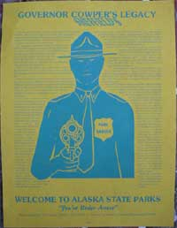
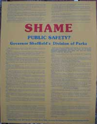
We printed this smaller flyer to hand out during the many Park Service public comment hearings for new regulations, much to the irritation of the Park Ranger dolts. As long as the concept of power infects human minds, the self-inflicted disease will cause its victims to genuinely believe that they exist to help the people, as did Saddam, Hitler, Bush, Clinton, their minions and their ilk, much to the laughter of observers.
We made calendars, until the calendar guy took up kayaking, and the other climbers spent their time climbing instead of doing paperwork things. All the pictures are in the Alaska Range. Each except one is on a new route, with outrageous stories.
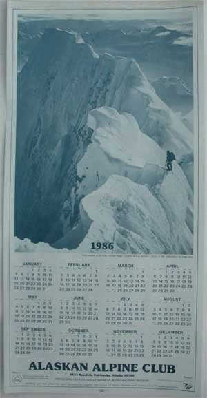
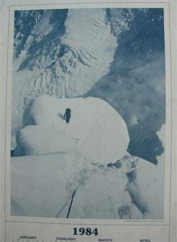
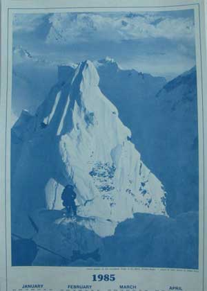
Now, if you want to escape the cold, snow, crevasses, cornices or the normal routine, you might travel to Egypt for Sharm el Sheikh holidays. Relax at the beach and go on a camel trek.
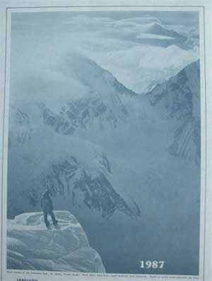
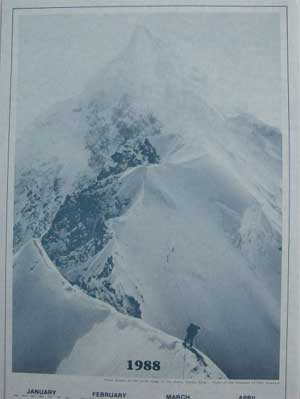
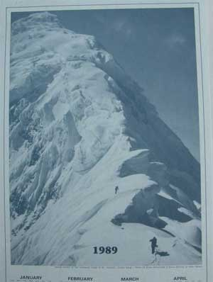
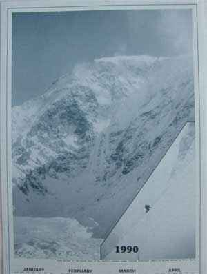
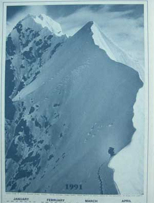
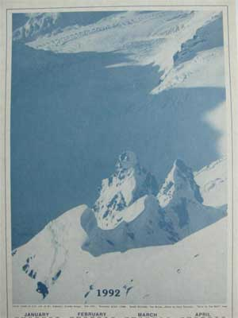
And there we jolly well have it yet again.
Climb on...
Climbing Taxes
The Club
Climbing Concepts 1
Climbing Concepts 2
Climbing Concepts 3
Club Museum
Gullible Climbers
Member Number
Mountain Rescue Fund
Wilderness Classic Race
National Park Service
Posters 2
Photos
Events
Ice Towers
Ice Towers Web Cam
03-04 Ice Tower
04-05 Ice Tower
05-06 Ice Tower
07-08 Ice Tower1
07-08 Ice Tower2
07-08 Ice Tower3
07-08 Ice Tower4
07-08 Ice Tower5
07-08 Ice Tower6
07-08 Ice Tower7
07-08 Ice Tower8
Other Ice Towers
Links
Home